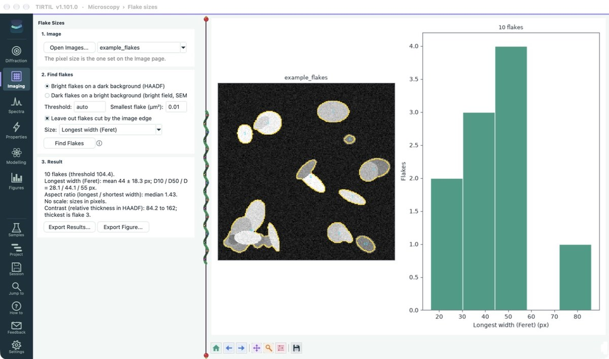
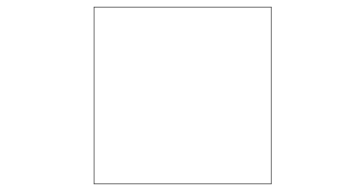

Imaging
Flake sizes
Lateral size and thickness of flakes.

Steps
Open Images...Open a low-magnification image with separate flakes.Find Flakesoutlines each one. Change the threshold if flakes touch.- Sizes: Feret widths with D10, D50 and D90; the gray level gives a relative thickness.
How it works

Worked example
D50 = 0.7 µm means half the flakes are smaller than 0.7 µm. Longer sonication usually lowers it.
In TIRTIL: How to (⌘/) › Try It With Example Data loads this example.